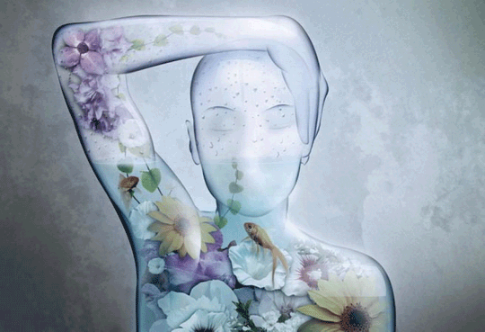

Почему полезная вода должна быть правильно очищенной
Мы часто слышим о «целебных» источниках или «живой» воде. Но в условиях современного города главный секрет полезной воды — это не её происхождение, а качество её очистки. Чтобы вода приносила пользу, а не вред, она должна соответствовать строгим стандартам чистоты.
Миф о «природной» чистоте
Многие верят, что вода из скважины или родника по определению полезнее, чем очищенная. Однако реальность такова:
- Поверхностные загрязнения. Родники часто подвержены влиянию сельскохозяйственных стоков (пестициды, нитраты).
- Бактериальный фон. Без стерилизации природная вода может содержать кишечную палочку и другие патогены.
- Избыток минералов. Слишком высокая концентрация солей в «природной» воде может привести к образованию камней в почках.
Что делает воду по-настоящему полезной?
Полезная вода — это баланс между абсолютной чистотой и необходимым минеральным составом.
1. Отсутствие токсинов
Использование обратного осмоса удаляет всё, что не должно быть в организме: хлор, тяжелые металлы, микропластик.
2. Стерильность
Озонирование гарантирует, что вода безопасна на 100%, что особенно важно для людей с чувствительным здоровьем.
3. Правильная минерализация
В Crystal Water мы возвращаем в воду именно те элементы, которые поддерживают электролитный баланс организма, не перегружая его.
Как это влияет на ваше самочувствие?
Когда вы пьете правильно очищенную воду, ваш организм перестает тратить ресурсы на «борьбу» с примесями и начинает использовать энергию для восстановления и роста.
- Улучшается работа ЖКТ и метаболизм.
- Кожа становится чище и увлажненнее.
- Повышается общий уровень энергии и работоспособности.
Подарите своему организму настоящую пользу
Не полагайтесь на случай — выбирайте технологическую чистоту. Заказывайте доставку полезной очищенной воды в Бровары и Киев от Crystal Water.
Заказать полезную воду